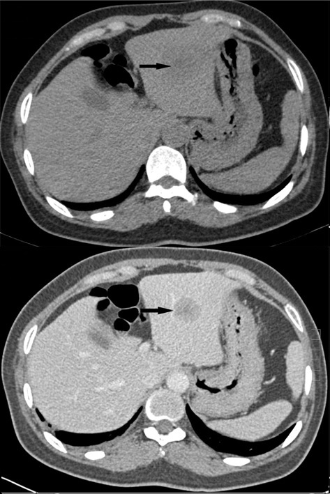
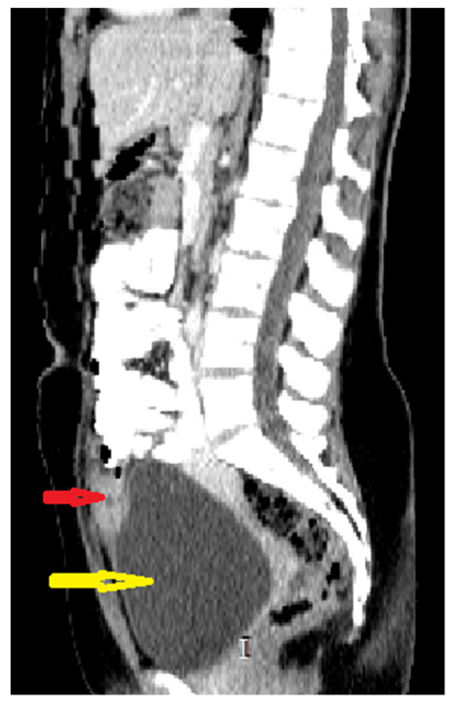

What Is Contrast in CT?
A CT scan can show many body structures without any contrast. But sometimes, two structures may look very similar on a normal CT image, making them difficult to tell apart.
Contrast is a special substance given to the patient to make certain organs, blood vessels, or areas of the body easier to see on CT.
The most common contrast used for CT is iodine-based contrast. Iodine absorbs X-rays strongly, so areas containing iodine can appear brighter on the CT image.
Why Is Contrast Used?
The main purpose of contrast is to create a clearer difference between different structures.
For example, a blood vessel may be difficult to distinguish from the tissues around it on a non-contrast CT. After IV contrast is given, the contrast travels through the blood, making the blood vessels much easier to see.
Contrast can also help show:
- Blood vessels
- Certain organs and their blood supply
- Tumors and other abnormal areas
- Inflammation or infection
- Some areas of active bleeding
Contrast does not make every abnormal area bright. Its effect depends on the type of tissue, the type of contrast used, and when the CT image is taken.

How Is Contrast Given?
Contrast can be given in different ways depending on what part of the body needs to be examined.
1. IV Contrast
IV means intravenous, which means the contrast is injected into a vein.
This is the most common route for contrast in many CT examinations.
After injection, the contrast travels through the bloodstream and can make:
- Blood vessels easier to see
- Organs more clearly visible
- Some abnormal areas easier to detect
For example, in a CT angiography (CTA), IV contrast is used to make blood vessels stand out clearly.
2. Oral Contrast
Oral contrast is taken by mouth as a liquid.
It is mainly used when the stomach or intestines need to be seen more clearly.
For example, in some abdominal CT examinations, oral contrast helps separate the bowel from nearby structures.

3. Rectal Contrast
Rectal contrast is given through the rectum.
It is used when the large intestine (colon) needs to be outlined more clearly.
This can be useful in selected CT examinations of the bowel.
What Happens After IV Contrast Is Given?
Once IV contrast enters the bloodstream, it travels around the body.
When a CT scan is taken while the contrast is passing through a particular organ or blood vessel, that structure may appear brighter than it did before contrast.
This increase in brightness is called enhancement.
For example:
With IV contrast → blood vessels can become much easier to see
So, when you hear that a structure “enhances” on CT, it simply means that it becomes more visible after contrast reaches it.
Why Is Timing Important?
IV contrast does not stay in the same place all the time.
After injection, it moves through the blood vessels and then through different organs. Because of this, the same organ can look different depending on when the CT image is taken.
This is why CT examinations can include different phases.
Arterial Phase
Images are taken when the contrast is mainly in the arteries.
This phase is useful for looking at arteries and structures that receive a strong arterial blood supply.
Portal Venous Phase
Images are taken later, when contrast has reached the portal venous system and is well distributed through many abdominal organs.
This phase is commonly used for abdominal imaging, including the liver.
Delayed Phase
Images are taken later still.
Delayed images can provide additional information about certain organs or abnormal areas.
Important: The exact timing of each phase depends on the CT examination and the information the radiologist needs. The phases are not simply different scans of the same thing—they are taken at different times to show how contrast moves through the body.
A Simple Liver Example
Imagine a small abnormal area in the liver.
On a non-contrast CT, it may be difficult to distinguish from the normal liver tissue.
After IV contrast is given, the area and the surrounding liver may take up contrast differently.
By looking at images taken at different times, the radiologist can see how the area changes compared with the normal liver.
This can provide useful information about the abnormal area.
Does Every CT Need Contrast?
No.
Many CT scans can be performed without contrast, and sometimes a non-contrast CT is exactly what is needed.
For example, non-contrast CT is commonly useful for:
- Many kidney-stone examinations
- Seeing calcifications
- Looking at bone
- Detecting certain types of bleeding
- Assessing areas where contrast is not needed
In some examinations, both non-contrast and contrast-enhanced images may be taken because each provides different information.
Contrast and CT Numbers (HU)
You may already know that every CT pixel has a number called a Hounsfield Unit (HU).
Contrast can change the HU of the area where it is present because iodine absorbs X-rays strongly.
For example, a blood vessel containing IV contrast can have a much higher HU than the same vessel before contrast.
This is one reason contrast makes blood vessels and some other structures appear brighter on CT.
Does Contrast Always Mean Something Is Abnormal?
No.
If an area becomes brighter after contrast, it means that the area has enhanced.
Enhancement alone does not tell us exactly what the area is.
Radiologists look at enhancement together with the shape, location, CT appearance, patient history, and other imaging findings to understand what an abnormal area may represent.
What Might the Patient Feel?
When IV iodine contrast is injected, some people may briefly feel:
- Warmth spreading through the body
- A metallic taste in the mouth
- A feeling similar to needing to urinate
These sensations usually pass quickly.
Contrast is generally used when the expected information from the examination is worth the risks. Before giving contrast, the healthcare team considers relevant factors such as previous contrast reactions and kidney function.
The Big Picture
The easiest way to understand contrast CT is:
The route depends on the examination:
IV → blood vessels and organs
Oral → stomach and intestines
Rectal → large intestine
Easy Way to Remember
Contrast = better separation
It does not create a CT image by itself. Instead, it helps certain structures stand out from the tissues around them.
Key Takeaway
Contrast is used in CT when it can provide extra information that may not be clear on a non-contrast scan. IV contrast is mainly used to show blood vessels and improve the visibility of organs and some abnormal areas, while oral and rectal contrast help outline parts of the digestive tract.
The important idea is simple:
Contrast helps us see the difference between structures more clearly.
Sources
- American College of Radiology (ACR) — ACR Manual on Contrast Media
- RadiologyInfo — Contrast Materials
- RadiologyInfo — Coronary CT Angiography (CCTA)
- RadiologyInfo — Abdominal and Pelvic CT
- Clinical literature on iodinated contrast and CT enhancement